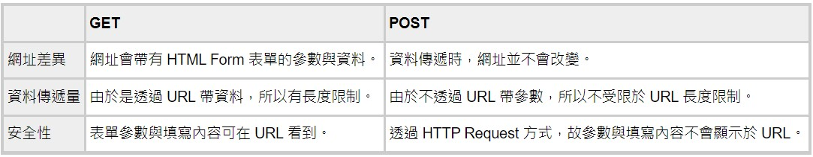

ASP.NET期中筆記
ASP.NET期中筆記
- runat="server" 前端與後端連接
- if (!IsPostBack) 頁面第一次載入的時候初始化頁面的預設設定
- AutoPostBack="TRUE|FALSE" 自動重新整理 (e.g. DropDownList選取時直接執行)
- protected void DropDownList1_SelectedIndexChanged(object sender, EventArgs e)
{
mybody.Attributes["bgcolor"] = ((DropDownList)sender).SelectedValue;
}
DropDownList1選擇之後更換背景顏色
- void AddOne(ref int n)
{
n = n + 1;
}
引數加上ref為call by reference
- js:document.getElementById('mydiv').innerHTML = "Hello World!"
可覆蓋掉重複的字
- js:let img = document.createElement("img")
img.src = "poker/" + p + s + ".gif"
document.body.appendChild(img)
建立圖片物件，給與指定路徑並加入到網頁
- DropDownList1.DataSource = new string[] { "s", "c", "d", "c" };
DropDownList1.DataBind();
RadioButtonList1.DataSource = new string[] { "s", "c", "d", "c" };
RadioButtonList1.DataBind();
繫結資料並DataBind
- defaultbutton="Button1"
進入頁面直接按Enter可執行Button1
- defaultfocus="TextBox1"
進入頁面可直接在TextBox1輸入
- onFocus="this.select()"
在textbox加入可自動選取文字
- coverprice = Convert.ToInt32(Regex.Match(cbEng_cover.Text, @"-?\d+").Value);
可將一串文字裡的數字抓出來並轉換成整數
- <asp:FileUpload ID="FileUpload1" runat="server" />
<asp:HyperLink ID="HyperLink1" runat="server" Visible="False">HyperLink</asp:HyperLink>
protected void Button1_Click(object sender, EventArgs e)
{
if (FileUpload1.HasFile)
{
FileUpload1.SaveAs(Server.MapPath("uploads/") + FileUpload1.FileName);
HyperLink1.Text = FileUpload1.FileName;
HyperLink1.NavigateUrl = "uploads/" + FileUpload1.FileName;
HyperLink1.Visible = true;
}
}
FileUpload與HyperLink元件實現上傳檔案及顯示檔案內容
- DropDownList ddl = new DropDownList();
Button btn = new Button();
btn.Click += new System.EventHandler(this.ddl_SelectedIndexChanged);
div1.Controls.Add(ddl);
div1.Controls.Add(btn);
protected void ddl_SelectedIndexChanged(object sender, EventArgs e)
{
//DropDownList ddl = (DropDownList)sender;
Response.Output.Write("You choose {0}", ddl.SelectedValue);
}
宣告DropDownList與Button物件並加入至div1，ddl_SelectedIndexChanged設置給btn.Click
- if (!IsPostBack)
{
string[] eng = { "heady", "invariably", "illiterate", "lavish", "incessant", "lethal", "incumbent", "lucrative", "indignant", "ludicrous", "inherent", "malicious", "initial", "mock", "integral", "mundane", "intricate", "optional", "invalid", "perennial" };
string chiString = "飄飄然的, 必定地不變地, 不識字的, 鋪張的奢華的, 不停的, 致命的, 現職的, 可獲利的, 憤憤不平的, 可笑的滑稽的, 固有的, 懷惡意的, 首度的, 煞有其事的, 必須的不可或缺的, 世俗的, 複雜的, 可選擇的, 無效的作廢的, 長期間持續的";
string[] chi = chiString.Split(new char[] { ',', ' ' }, StringSplitOptions.RemoveEmptyEntries);
for (int i = 0; i < eng.Length; i++)
{
DropDownList1.Items.Add(new ListItem(eng[i], chi[i]));
BulletedList1.Items.Add(new ListItem(eng[i], String.Format("https://tw.dictionary.search.yahoo.com/search?p={0}", eng[i])));
}
DropDownList1.Items.Insert(0, new ListItem("請選擇單字", ""));
}
將chiString利用,切割成陣列，再加入DropDownList1& BulletedList1
protected void DropDownList1_SelectedIndexChanged(object sender, EventArgs e)
{
Response.Output.Write("{0}的中文{1}", DropDownList1.SelectedItem.Text, DropDownList1.SelectedValue);
Response.Redirect(String.Format("https://tw.dictionary.search.yahoo.com/search?p={0}", DropDownList1.SelectedItem.Text));
}
帶出中文及英文，跳轉頁面
- ListBox
lbFamiliar.Items[i].Selected
lbUnFamiliar.Items.Add(lbFamiliar.Items[i]);
lbFamiliar.Items.RemoveAt(i);
- Calendar & jQuery Datepicker
- <input type="datetime-local" required id ="mydatetime1" runat="server" />
將input種類設定為calendar，required必須輸入
- <appSettings>
<add key="ValidationSettings:UnobtrusiveValidationMode" value="None" />
</appSettings>
使用以下功能需在Web.config加入上述程式
RequiredFieldValidator 確保使用者有輸入資料
ControlToValidate="TextBox1" 監控哪個物件
Display="Dynamic" 驗證失敗時，驗證訊息的空間會動態新增至頁面
ErrorMessage="姓名是必要欄位" 驗證失敗時的錯誤訊息
ValidationGroup="first 設定驗證群組
- RangeValidator 確保使用者輸入資料在範圍內
MaximumValue="120" 最大值(包含)
MinimumValue="0" 最小值(包含)
Type="Integer" 資料型態
- ValidationSummary 可顯示設定群組之錯誤訊息
- RegularExpressionValidator 確保格式正確
ValidationExpression 此屬性可調整想對照的格式(e.g. email)
- CompareValidator 比較與另外一個物件的值是否相同，例如確認密碼
ControlToCompare="TextBox4" 與TextBox4比較值
- CustomValidator 使用使用者自己定義的驗證
ClientValidationFunction="checkintroduction" 指定自己定義的驗證
<script>
function checkintroduction(sender, args) {
if (args.Value.length < 20)
args.IsValid = false //指出網頁驗證是否成功
}
}
</script>
- <form method="get" action="https://tw.dictionary.search.yahoo.com/search;" accept-charset="utf-8">
<input type="text" name="p" required autofocus onclick="this.select()" />
<input type="submit" />
</form>
html get 英語單字查詢
- <asp:DropDownList ID="DropDownList1" runat="server" AutoPostBack="True">
<asp:ListItem Value="https://tw.dictionary.search.yahoo.com/search?p=">Yahho</asp:ListItem>
<asp:ListItem Value="https://dictionary.cambridge.org/zht/詞典/英語-漢語-繁體/">Canbridge</asp:ListItem>
</asp:DropDownList>
protected void Button1_Click(object sender, EventArgs e)
{
Response.Redirect(string.Format("{0}{1}", DropDownList1.SelectedValue, TextBox1.Text));
}
DropDownList可選擇Yahooc或cambridge在輸入單字可跳轉到查詢頁面
- input autofocus 頁面載入時會自動在輸入框
- TextBox TextMode="Password" 輸入文字有密碼效果
- GET 與 POST 的差異

-
<form id="form1" action="test2.aspx" method="post" runat="server">
<div>
<asp:Panel ID="Panel1" runat="server">
<asp:TextBox ID="a" runat="server"></asp:TextBox>
<br />
<asp:TextBox ID="b" runat="server"></asp:TextBox>
<br />
<asp:Button ID="Button1" runat="server" Text="Button" />
</asp:Panel>
</div>
</form>
利用post方法傳送資料到test2.aspx
public partial class test2 : System.Web.UI.Page
{
protected void Page_Load(object sender, EventArgs e)
{
Response.Output.Write("{0}, {1}", Request["a"], Request["b"]);
}
}
在text2.aspx獲取值
- HiddenField hf = new HiddenField();
hf.Value = 5.ToString();
hf.ID = "cnt2";
mydiv.Controls.Add(hf);
HiddenField儲存需要在向伺服器的傳送間保持的值
- ASP.NET保存資訊 Application、Session、Cookie、Cache、ViewState的差異
- Session["text"] = text.Text;
Session["selected"] = selected;
Session可以存放值或整個object
- Session["text"]
DropDownList ddl = (DropDownList)Session["selected"];
string selected = ddl.SelectedValue;
Session獲取值或object
- Response.Redirect("page1.aspx");
導到page1.aspx頁面
- Random r = new Random();
for (int i = cards.Length - 1; i >= 1; i--)
{
int x = r.Next(i+1);
if (x != i)
{
int tmp = cards[x];
cards[x] = cards[i];
cards[i] = tmp;
}
}
洗牌演算法
- for (int i = 0; i < 5; i++)
{
TextBox tb = new TextBox();
tb.Width = Unit.Point(5 * 8);
tb.ID = "user" + i;
Label lb1 = new Label();
lb1.Text = "</br>";
mydiv.Controls.Add(tb);
mydiv.Controls.Add(lb1);
}
Button btn = new Button();
btn.Text = "submit";
mydiv.Controls.Add(btn);
動態產生TextBox與Button
- int n2 = Convert.ToInt32(Request["cnt2"]);
int n = Int32.Parse(Literal2.Text);
string轉int
- Literal3.Text =bingo.ToString();
int轉string
 陳杰龍的筆記網站
陳杰龍的筆記網站 主頁
主頁 歸檔
歸檔 分類
分類 其他
其他 關於我
關於我